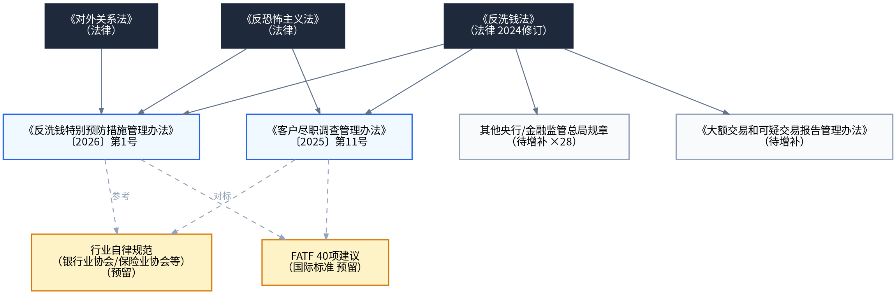
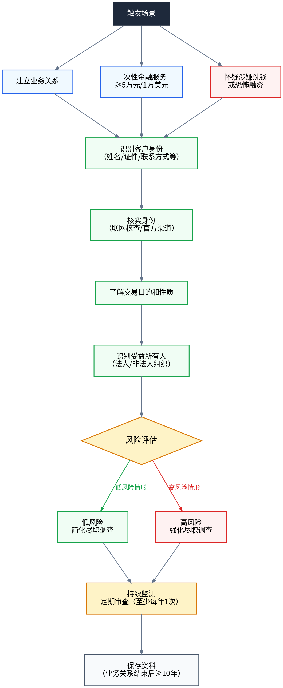
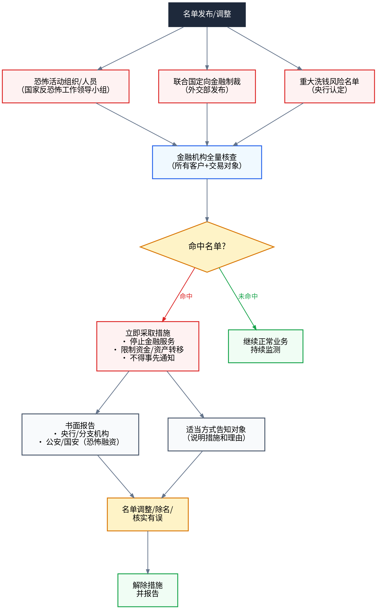

反洗钱学习手册
从零基础到专业能力 · 以《反洗钱法》为纲，40部法规全量挂载
导学篇：学习地图与训练方法
本手册以《中华人民共和国反洗钱法》（2024年11月8日修订，2025年1月1日起施行，共7章65条）为基本法，以40部配套法规为细化规则，为零基础学员搭建"以法为纲、以规为目"的完整学习路径。
手册讲"为什么懂、怎么用"，规则库讲"具体怎么规定"。手册中不重复条文原文，而是通过链接挂载到规则库对应条文。点击文中蓝色法规链接即可跳转查看原文、释义与关联条款。
三阶六维学习体系
本手册采用六阶×三阶交叉架构：六阶是"学什么"（内容维度），三阶是"学到多深"（深度维度）。
| 阶段 | 主题 | 解决什么问题 |
|---|---|---|
| 第一阶 | 概念建立 | 反洗钱到底在反什么？ |
| 第二阶 | 原理理解 | 为什么要反洗钱？ |
| 第三阶 | 制度认知 | 法律体系长什么样？ |
| 第四阶 | 责任明确 | 谁该做什么？做不好会怎样？ |
| 第五阶 | 流程掌握 | 核心业务怎么走？ |
| 第六阶 | 方法应用 | 具体怎么做？ |
| 深度 | 定位 | 内容特征 |
|---|---|---|
| L1 认知层 | 科普级 | 一句话定义、生活类比、框架图谱——建立"是什么"的认知 |
| L2 精通层 | 专业级 | 构成要件、立法沿革、操作标准——掌握"怎么用"的专业知识 |
| L3 能力层 | 专家级 | 争议辨析、跨法比较、复杂场景——培养"遇到难题会判断"的能力 |
L1内容直接写在正文中；L2/L3内容以可展开的折叠块呈现，点击「▶ 深度学习」展开。三个深度都通过链接挂载到规则库的条文上。

入口诊断：你该从哪里开始？
3个问题，推荐你的学习起点
目录导航
- 第一阶 · 概念建立 L1 — 10个核心术语，建立认知闭环
- 第二阶 · 原理理解 L1 — 为什么要反洗钱？风险为本的底层逻辑
- 第三阶 · 制度认知 L1 — 7章框架 × 40部法规全量挂载
- 第四阶 · 责任明确 L1 — 谁负责什么？处罚梯度与案例
- 第五阶 · 流程掌握 L1 — 四大核心流程图解
- 第六阶 · 方法应用 L1 — 操作实例 + 错案警示 + 速查表
- 能力检验关卡 — 10道场景判断题
- 附：法规库索引 — 40部法规速查
第一阶 · 概念建立 L1 认知
第一次接触反洗钱的人，最常问的问题不是"反洗钱是什么"，而是"洗钱到底是怎么洗的？为什么银行要管？"这一阶就用10个核心术语，帮你把这些问题一次说清。
以下10个概念是理解整个反洗钱体系的"钥匙"。每个概念配一句话定义 + 要点展开 + 认知锚例，帮你快速建立概念框架。
一句话：将犯罪所得及其收益通过各种手段掩饰、隐瞒，使其在形式上合法化的行为。
要点：上游犯罪（毒品、走私、贪腐、金融诈骗等）→ 产生非法资金 → 通过分层、整合等手段掩盖来源 → 伪装成合法收入。反洗钱制度就是要在这一链条的各个环节设置障碍。
L2 精通层
深入理解概念的法律定义边界、构成要件、立法沿革。点击上方法规链接查看规则库中的逐条释义。
L3 能力层
概念的跨法比较、争议辨析、复杂场景适用。参考规则库中各条文的关联条款。
一句话：为恐怖活动组织或个人筹集、转移、使用资金的行为。
要点：恐怖融资与洗钱常常交织，但本质不同：洗钱是"洗白"已有犯罪所得，恐怖融资可能是"筹集"合法或非法资金用于恐怖目的。
L2 精通层
恐怖融资的认定标准、资金渠道分类、与反恐法律体系的衔接。
L3 能力层
非营利组织被恐怖融资利用的风险识别、跨境恐怖融资追踪。
一句话：产生洗钱所掩饰、隐瞒的犯罪所得的原始犯罪。
要点：反洗钱法第2条规定了七类上游犯罪并兜底"其他犯罪"，实质上将上游犯罪范围扩展到所有犯罪。刑法第191条洗钱罪的上游犯罪则限定为七类。
L2 精通层
七类上游犯罪的具体范围、兜底条款的适用逻辑、与刑法第191条的衔接差异。
L3 能力层
上游犯罪尚未判决时能否认定洗钱？跨法比较中的争议焦点。
一句话：金融机构在与客户建立业务关系或进行交易时，识别客户身份、了解业务目的、评估风险的过程。
要点：CDD是反洗钱的基石——不知道客户是谁，就无法判断资金是否可疑。包括初次CDD、持续CDD和强化CDD三个层次。
L2 精通层
CDD的三层架构（初次/持续/强化）的操作标准、触发条件、记录要求。
L3 能力层
代理行CDD、第三方CDD的信赖边界、跨境CDD信息获取难点。
一句话：最终拥有或控制客户的自然人，或对客户享有最终收益的自然人。
要点：受益所有人穿透到"自然人"层面，不限于登记的法定代表人。一般标准：持股超过25%的自然人即为受益所有人。
L2 精通层
25%持股标准的适用、多层SPV架构穿透方法、受益所有人信息登记制度。
L3 能力层
信托架构下的受益所有人识别、跨境股权穿透的法律障碍与解决方案。
一句话：金融机构对达到规定金额标准的交易，向反洗钱监测分析机构提交的报告。
要点：大额交易不等于可疑交易——它只是金额达到了报告门槛，交易本身可能是完全合法的。报告的目的是为监测分析提供数据基础。
L2 精通层
大额交易的具体金额标准（5万/20万/1万美元等）、报告要素、报送时限。
L3 能力层
"明显关联的累计交易"判定标准、跨境大额报告的特殊要求。
一句话：金融机构对怀疑与洗钱、恐怖融资有关的交易，向反洗钱监测分析机构提交的报告。
要点：可疑交易报告是反洗钱最有力的"发现武器"——它不依赖固定金额，而是基于合理怀疑。核心判断标准：交易与客户身份、业务性质、风险等级不符。
L2 精通层
可疑交易监测模型设计、人工甄别流程、报告要素与报送时限。
L3 能力层
新型洗钱手法（虚拟货币、直播打赏等）的可疑交易识别、误报与漏报的平衡。
一句话：反洗钱措施应与所面临的洗钱风险相适应，对高风险采取强化措施，对低风险可简化措施。
要点：风险为本是现代反洗钱的核心方法论——有限的合规资源应优先投向高风险领域，而不是对所有客户"一刀切"。
L2 精通层
风险自评估方法论、客户/产品/渠道/地理四维风险评级体系。
L3 能力层
FATF互评估中风险为本执行的薄弱环节、如何对标国际标准改进。
一句话：针对恐怖活动名单、联合国定向制裁名单、其他国家名单，金融机构应立即采取的停止服务、限制资产转移等措施。
要点：特别预防措施是反洗钱的"紧急制动"——一旦客户命中名单，必须立即行动，不得事先通知客户。
L2 精通层
三类名单的发布机制、核查流程、资产冻结的操作标准与解冻程序。
L3 能力层
善意第三人保护机制、跨境制裁合规冲突的应对策略。
一句话：金融机构为履行反洗钱义务而建立的内部管理制度体系，包括组织架构、操作流程、培训审计等。
要点：内控制度是反洗钱的"基础设施"——没有制度，再好的员工也不知道该做什么。法规要求建制度、设机构、配人员、做培训、搞审计。
L2 精通层
内控制度的构成要素、独立反洗钱部门设置标准、审计频次要求。
L3 能力层
内控制度有效性评估方法、中小金融机构的合规资源优化配置。
第二阶 · 原理理解 L1 认知
2019年，某城商行因未识别出一家空壳公司的异常资金流转，1.2亿元诈骗资金通过该行洗出。事后调查发现，该行客户经理甚至没有核实公司实际经营场所。最终该行被罚款430万元，3名高管被追责。
如果当时多问一句"这家公司到底做什么生意"，1.2亿也许就不会流出。这就是反洗钱的意义——不是给业务设障碍，而是守住金融安全的底线。
2.1 为什么要反洗钱？——三层递进逻辑
洗钱是犯罪链条的"最后一公里"——毒品、贪腐、恐怖融资，最终都要把黑钱洗白。切断洗钱通道，等于掐断了犯罪的"经济血脉"。《反洗钱法》 第1条明确将"维护国家安全"写入立法目的。
大量黑钱涌入金融体系，会扭曲市场信号、扰乱金融秩序。更严重的是，如果一家银行被发现帮人洗钱，公众信任会瞬间崩塌——挤兑、股价暴跌、连锁反应。《反洗钱法》 第3条要求坚持"总体国家安全观"，正是从这个高度出发。
对金融机构而言，反洗钱不是"多做一步"，而是"必须做"的法律义务。不做或做不好，《反洗钱法》 第52条到第56条规定了从警告到巨额罚款、再到个人追责的完整处罚体系。反洗钱合规已经从"成本中心"变成"生存底线"。
2.2 风险为本：现代反洗钱的核心方法论
"风险为本"（Risk-Based Approach）是《反洗钱法》 第4条确立的基本原则，也是FATF（金融行动特别工作组）倡导的全球标准。它的核心思想是：
不是所有客户都一样危险，所以不能对所有客户用同一套措施。
- 高风险客户 → 强化CDD：实地查访、高层批准、加强监测
- 标准风险客户 → 标准CDD：核实身份、了解用途、常规监测
- 低风险客户 → 简化CDD：简化流程、减少频次（需有充分依据）
这样做的目的是把有限的合规资源投向最需要的地方，而不是"撒胡椒面"式地平均用力。
2.3 风险为本 vs 规则为本
| 对比维度 | 规则为本（旧模式） | 风险为本（新模式） |
|---|---|---|
| 核心逻辑 | 按清单逐项执行 | 按风险等级配置资源 |
| 客户分类 | 不区分或粗略区分 | 精细分级，动态调整 |
| 资源分配 | 平均用力 | 高风险多投入，低风险简化 |
| 判断依据 | 是否触发了固定规则 | 是否与风险状况相匹配 |
| 灵活性 | 低，遇到新型风险反应慢 | 高，能动态应对新风险 |
L2 精通层
风险为本的实操逻辑：如何进行风险自评估？如何划定客户风险等级？低风险简化措施的具体边界在哪？详见《风险自评估指引》和《低风险简化措施指引》。
L3 能力层
风险为本与FATF互评估机制的衔接：我国在FATF互评估中风险为本执行的薄弱环节是什么？如何对标国际标准改进？
第三阶 · 制度认知 L1 认知
反洗钱不只有一部《反洗钱法》，而是一个由法律、行政法规、部门规章、规范性文件构成的完整体系。40部法规看起来很多，但它们都有各自的"位置"——挂在反洗钱法7章65条的骨架上。这一阶的目标，就是帮你建立这个"骨架+挂载"的整体认知。
本篇以《反洗钱法》7章65条为骨架，将40部法规全量映射到对应章节。每章给出：认知导入 → 核心制度脉络 → 法规挂载清单 → 易混对比 → 认知检查。
| 层级 | 数量 | 特点 | 代表 |
|---|---|---|---|
| 法律 | 7部 | 全国人大及其常委会制定，效力最高 | 反洗钱法、刑法 |
| 行政法规 | 1部 | 国务院制定 | 市场主体登记管理条例 |
| 部门规章 | 14部 | 央行/金融监管总局制定，具体操作规范 | CDD办法、报告办法 |
| 规范性文件 | 18部 | 实施细则、指引、通知 | 交易监测指引、风险管理指引 |
3.1 第一章 总则（第1-12条）：定义、原则与适用范围
一位老人到银行要求把全部存款转到境外一个陌生账户。柜员觉得不对劲，但说不清"不对"在哪里——是哪个法规赋予了银行询问和拦截的权利？老人如果不配合，银行能怎么办？
本章是整部法律的基石，明确反洗钱的立法目的、基本定义、工作原则与适用范围。核心是确立"风险为本"理念，划定义务主体边界，并首次写入域外适用条款。
本章要点：第2条定义涵盖七类上游犯罪并兜底"其他犯罪"；坚持总体国家安全观与风险为本；央行统一监管、各部门配合；金融机构与特定非金融机构均为义务主体；反洗钱信息严格保密；境外洗钱活动危害我国权益可依法追责。
| 对比维度 | 反洗钱法第2条 | 刑法第191条 |
|---|---|---|
| 上游犯罪范围 | 七类+兜底"其他犯罪" | 仅七类上游犯罪 |
| 适用效果 | 范围最广，实质涵盖所有犯罪 | 范围较窄，刑事处罚的前提 |
为了预防洗钱活动，遏制洗钱以及相关犯罪，加强和规范反洗钱工作，维护金融秩序、社会公共利益和国家安全，根据宪法，制定本法。
明确反洗钱法的立法目的：预防洗钱活动、遏制相关犯罪、加强反洗钱工作、维护金融秩序与国家安全。这是整部法律的价值基点。
本法所称反洗钱，是指为了预防通过各种方式掩饰、隐瞒毒品犯罪、黑社会性质的组织犯罪、恐怖活动犯罪、走私犯罪、贪污贿赂犯罪、破坏金融管理秩序犯罪、金融诈骗犯罪和其他犯罪所得及其收益的来源、性质的洗钱活动，依照本法规定采取相关措施的行为。
预防恐怖主义融资活动适用本法；其他法律另有规定的，适用其规定。
核心定义条款。反洗钱是指为预防掩饰、隐瞒七类上游犯罪（毒品犯罪、黑社会性质的组织犯罪、恐怖活动犯罪、走私犯罪、贪污贿赂犯罪、破坏金融管理秩序犯罪、金融诈骗犯罪）及其他犯罪所得的来源和性质而依法采取的措施。恐怖主义融资活动适用本法。注意「其他犯罪」作为兜底条款，实质上将上游犯罪范围扩展至所有犯罪。
反洗钱工作应当贯彻落实党和国家路线方针政策、决策部署，坚持总体国家安全观，完善监督管理体制机制，健全风险防控体系。
确立反洗钱工作的基本原则：贯彻总体国家安全观，完善监督管理体制机制，健全风险防控体系。体现了反洗钱从单纯的金融监管上升为国家安全的战略层面。
反洗钱工作应当依法进行，确保反洗钱措施与洗钱风险相适应，保障正常金融服务和资金流转顺利进行，维护单位和个人的合法权益。
确立「风险为本」原则：反洗钱措施应与洗钱风险相适应，同时保障正常金融服务和资金流转，维护单位和个人合法权益。这是金融机构开展反洗钱工作的核心指导原则。
国务院反洗钱行政主管部门负责全国的反洗钱监督管理工作。国务院有关部门在各自的职责范围内履行反洗钱监督管理职责。
国务院反洗钱行政主管部门、国务院有关部门、监察机关和司法机关在反洗钱工作中应当相互配合。
构建反洗钱监管体制：央行（国务院反洗钱行政主管部门）负责全国反洗钱监管，国务院有关部门在各自职责范围内履行监管职责，各部门应相互配合。
在中华人民共和国境内（以下简称境内）设立的金融机构和依照本法规定应当履行反洗钱义务的特定非金融机构，应当依法采取预防、监控措施，建立健全反洗钱内部控制制度，履行客户尽职调查、客户身份资料和交易记录保存、大额交易和可疑交易报告、反洗钱特别预防措施等反洗钱义务。
明确反洗钱义务主体：境内设立的金融机构和特定非金融机构。义务内容包括：采取预防监控措施、建立内控制度、履行客户尽职调查、资料保存、大额和可疑交易报告等。
对依法履行反洗钱职责或者义务获得的客户身份资料和交易信息、反洗钱调查信息等反洗钱信息，应当予以保密；非依法律规定，不得向任何单位和个人提供。
反洗钱行政主管部门和其他依法负有反洗钱监督管理职责的部门履行反洗钱职责获得的客户身份资料和交易信息，只能用于反洗钱监督管理和行政调查工作。
司法机关依照本法获得的客户身份资料和交易信息，只能用于反洗钱相关刑事诉讼。
国家有关机关使用反洗钱信息应当依法保护国家秘密、商业秘密和个人隐私、个人信息。
信息保密义务：反洗钱信息（客户身份资料、交易信息、调查信息等）应予保密，非依法律规定不得向任何单位和个人提供。不同机关获取的信息用途受限不同。
履行反洗钱义务的机构及其工作人员依法开展提交大额交易和可疑交易报告等工作，受法律保护。
履职保护条款：履行反洗钱义务的机构及工作人员依法开展大额和可疑交易报告等工作受法律保护。这是反洗钱「安全港」条款，保护义务机构免受因依法报告而可能面临的民事责任。
反洗钱行政主管部门会同国家有关机关通过多种形式开展反洗钱宣传教育活动，向社会公众宣传洗钱活动的违法性、危害性及其表现形式等，增强社会公众对洗钱活动的防范意识和识别能力。
宣传教育义务：反洗钱行政主管部门应会同国家有关机关开展反洗钱宣传教育，增强公众防范意识和识别能力。
任何单位和个人不得从事洗钱活动或者为洗钱活动提供便利，并应当配合金融机构和特定非金融机构依法开展的客户尽职调查。
配合义务：任何单位和个人不得从事或便利洗钱活动，应配合金融机构和特定非金融机构依法开展的客户尽职调查。
任何单位和个人发现洗钱活动，有权向反洗钱行政主管部门、公安机关或者其他有关国家机关举报。接受举报的机关应当对举报人和举报内容保密。
对在反洗钱工作中做出突出贡献的单位和个人，按照国家有关规定给予表彰和奖励。
举报制度：任何单位和个人发现洗钱活动有权举报，接受举报的机关应对举报人和举报内容保密。
在中华人民共和国境外（以下简称境外）的洗钱和恐怖主义融资活动，危害中华人民共和国主权和安全，侵犯中华人民共和国公民、法人和其他组织合法权益，或者扰乱境内金融秩序的，依照本法以及相关法律规定处理并追究法律责任。
域外适用条款（新增）：境外洗钱和恐怖融资活动危害我国主权安全、侵犯公民权益或扰乱金融秩序的，依法追究法律责任。这是2024年修订的重要新增条款。
L2 精通层
第2条"其他犯罪"作为兜底，如何与刑法第191条洗钱罪的上游犯罪衔接？上游犯罪尚未判决时能否认定洗钱？第12条域外适用的触发条件在司法实践中如何举证与界定？
L3 能力层
域外适用条款与国际反洗钱管辖权冲突的解决路径、跨境数据取证的法律障碍。
3.2 第二章 反洗钱监督管理（第13-26条）：央行职责与监管体制
央行来检查反洗钱了——"请出示你们的风险评估报告、内控制度、培训记录"。银行合规专员手忙脚乱：这些到底都是谁要求的？央行有什么权力查？查完能罚吗？
本章构建反洗钱监督管理体制，明确央行主导、各部门分工配合的监管格局。设立反洗钱监测分析机构，建立信息共享、风险评估、监督检查等机制，并引入洗钱高风险国家地区名单管理。
本章要点：央行组织协调全国反洗钱并负责资金监测；金融管理部门在市场准入落实反洗钱审查；设立监测分析机构接收分析大额可疑交易报告；建立受益所有人信息管理制度；央行可实施风险监测评估、约谈董监高、现场检查；可列名洗钱高风险国家地区。
| 对比维度 | 第22条 监督检查 | 第23条 风险评估 |
|---|---|---|
| 对象 | 对具体机构的现场检查 | 对国家/行业层面的宏观评估 |
| 目的 | 查你做没做对 | 评估整体风险水平 |
国务院反洗钱行政主管部门组织、协调全国的反洗钱工作，负责反洗钱的资金监测，制定或者会同国务院有关金融管理部门制定金融机构反洗钱管理规定，监督检查金融机构履行反洗钱义务的情况，在职责范围内调查可疑交易活动，履行法律和国务院规定的有关反洗钱的其他职责。
国务院反洗钱行政主管部门的派出机构在国务院反洗钱行政主管部门的授权范围内，对金融机构履行反洗钱义务的情况进行监督检查。
央行核心职责：组织协调全国反洗钱工作、资金监测、监督检查、规章制定、国际合作等。央行是反洗钱工作的核心主导机构。
国务院有关金融管理部门参与制定所监督管理的金融机构反洗钱管理规定，履行法律和国务院规定的有关反洗钱的其他职责。
有关金融管理部门应当在金融机构市场准入中落实反洗钱审查要求，在监督管理工作中发现金融机构违反反洗钱规定的，应当将线索移送反洗钱行政主管部门，并配合其进行处理。
金融管理部门职责：参与制定反洗钱规章，在市场准入中落实反洗钱审查，对金融机构反洗钱工作进行指导监督。
国务院有关特定非金融机构主管部门制定或者国务院反洗钱行政主管部门会同其制定特定非金融机构反洗钱管理规定。
有关特定非金融机构主管部门监督检查特定非金融机构履行反洗钱义务的情况，处理反洗钱行政主管部门提出的反洗钱监督管理建议，履行法律和国务院规定的有关反洗钱的其他职责。有关特定非金融机构主管部门根据需要，可以请求反洗钱行政主管部门协助其监督检查。
特定非金融机构主管部门职责：制定本行业反洗钱规章，监督检查本行业义务机构反洗钱工作。
国务院反洗钱行政主管部门设立反洗钱监测分析机构。反洗钱监测分析机构开展反洗钱资金监测，负责接收、分析大额交易和可疑交易报告，移送分析结果，并按照规定向国务院反洗钱行政主管部门报告工作情况，履行国务院反洗钱行政主管部门规定的其他职责。
反洗钱监测分析机构根据依法履行职责的需要，可以要求履行反洗钱义务的机构提供与大额交易和可疑交易相关的补充信息。
反洗钱监测分析机构应当健全监测分析体系，根据洗钱风险状况有针对性地开展监测分析工作，按照规定向履行反洗钱义务的机构反馈可疑交易报告使用情况，不断提高监测分析水平。
反洗钱监测分析机构：负责接收、分析大额交易和可疑交易报告，移送分析结果，向央行报告工作情况。这是中国反洗钱情报中心的法律依据。
国务院反洗钱行政主管部门为履行反洗钱职责，可以从国家有关机关获取所必需的信息，国家有关机关应当依法提供。
国务院反洗钱行政主管部门应当向国家有关机关定期通报反洗钱工作情况，依法向履行与反洗钱相关的监督管理、行政调查、监察调查、刑事诉讼等职责的国家有关机关提供所必需的反洗钱信息。
部门间信息交换：央行与国家机关之间建立反洗钱信息共享机制，央行应向有关机关提供相关信息。
出入境人员携带的现金、无记名支付凭证等超过规定金额的，应当按照规定向海关申报。
海关发现个人出入境携带的现金、无记名支付凭证等超过规定金额的，应当及时向反洗钱行政主管部门通报。
前款规定的申报范围、金额标准以及通报机制等，由国务院反洗钱行政主管部门、国务院外汇管理部门按照职责分工会同海关总署规定。
海关通报制度：出入境人员携带超过规定限额的现金应申报，海关应向央行通报相关信息。
国务院反洗钱行政主管部门会同国务院有关部门建立法人、非法人组织受益所有人信息管理制度。
法人、非法人组织应当保存并及时更新受益所有人信息，按照规定向登记机关如实提交并及时更新受益所有人信息。反洗钱行政主管部门、登记机关按照规定管理受益所有人信息。
反洗钱行政主管部门、国家有关机关为履行职责需要，可以依法使用受益所有人信息。金融机构和特定非金融机构在履行反洗钱义务时依法查询核对受益所有人信息；发现受益所有人信息错误、不一致或者不完整的，应当按照规定进行反馈。使用受益所有人信息应当依法保护信息安全。
本法所称法人、非法人组织的受益所有人，是指最终拥有或者实际控制法人、非法人组织，或者享有法人、非法人组织最终收益的自然人。具体认定标准由国务院反洗钱行政主管部门会同国务院有关部门制定。
受益所有人信息管理：央行建立受益所有人信息管理制度，这是提升法人透明度、防范利用空壳公司洗钱的重要制度。
反洗钱行政主管部门和其他依法负有反洗钱监督管理职责的部门发现涉嫌洗钱以及相关违法犯罪的交易活动，应当将线索和相关证据材料移送有管辖权的机关处理。接受移送的机关应当按照有关规定反馈处理结果。
线索移送：央行发现涉嫌洗钱的线索应移送有管辖权的机关处理。
反洗钱行政主管部门为依法履行监督管理职责，可以要求金融机构报送履行反洗钱义务情况，对金融机构实施风险监测、评估，并就金融机构执行本法以及相关管理规定的情况进行评价。必要时可以按照规定约谈金融机构的董事、监事、高级管理人员以及反洗钱工作直接负责人，要求其就有关事项说明情况；对金融机构履行反洗钱义务存在的问题进行提示。
风险监测评估与约谈：央行可评估金融机构洗钱风险，对高风险机构可约谈董事、监事、高级管理人员。
反洗钱行政主管部门进行监督检查时，可以采取下列措施：
（一）进入金融机构进行检查；
（二）询问金融机构的工作人员，要求其对有关被检查事项作出说明；
（三）查阅、复制金融机构与被检查事项有关的文件、资料，对可能被转移、隐匿或者毁损的文件、资料予以封存；
（四）检查金融机构的计算机网络与信息系统，调取、保存金融机构的计算机网络与信息系统中的有关数据、信息。
进行前款规定的监督检查，应当经国务院反洗钱行政主管部门或者其设区的市级以上派出机构负责人批准。检查人员不得少于二人，并应当出示执法证件和检查通知书；检查人员少于二人或者未出示执法证件和检查通知书的，金融机构有权拒绝接受检查。
监督检查措施：央行可进入金融机构检查、询问、查阅复制资料、检查信息系统等。检查需经负责人批准、不少于二人、出示执法证件和检查通知书。
国务院反洗钱行政主管部门会同国家有关机关评估国家、行业面临的洗钱风险，发布洗钱风险指引，加强对履行反洗钱义务的机构指导，支持和鼓励反洗钱领域技术创新，及时监测与新领域、新业态相关的新型洗钱风险，根据洗钱风险状况优化资源配置，完善监督管理措施。
风险评估制度：央行评估国家、行业洗钱风险，发布风险指引。金融机构应据此开展风险自评估。
对存在严重洗钱风险的国家或者地区，国务院反洗钱行政主管部门可以在征求国家有关机关意见的基础上，经国务院批准，将其列为洗钱高风险国家或者地区，并采取相应措施。
高风险国家地区名单管理：经批准可将某些国家地区列为洗钱高风险，并采取相应措施。
履行反洗钱义务的机构可以依法成立反洗钱自律组织。反洗钱自律组织与相关行业自律组织协同开展反洗钱领域的自律管理。
反洗钱自律组织接受国务院反洗钱行政主管部门的指导。
行业自律：履行反洗钱义务的机构可成立行业自律组织，央行予以指导。
提供反洗钱咨询、技术、专业能力评价等服务的机构及其工作人员，应当勤勉尽责、恪尽职守地提供服务；对于因提供服务获得的数据、信息，应当依法妥善处理，确保数据、信息安全。
国务院反洗钱行政主管部门应当加强对上述机构开展反洗钱有关服务工作的指导。
行业服务机构管理：提供反洗钱咨询、技术服务的机构应勤勉尽责，确保信息安全。
L2 精通层
第22条监督检查的程序要求（经负责人批准、不少于二人、出示执法证件和检查通知书），金融机构合法拒绝检查的边界在哪？第24条将某国列为洗钱高风险国家地区与FATF黑灰名单机制如何衔接？
L3 能力层
央行监管权与金融监管总局行业监管权的边界划分、反洗钱跨部门协调机制的实务运作。
3.3 第三章 反洗钱义务（第27-42条）：尽调、保存、报告与特别预防
某珠宝店客户单日现金购买黄金300万元，柜员按普通客户流程办理——后来发现这笔钱是贪腐所得。银行被罚、客户经理被追责。如果当时做了强化CDD、报了大额交易，结局可能完全不同。
本章是反洗钱法的核心，系统规定金融机构的反洗钱义务：内部控制、客户尽职调查、资料保存、大额与可疑交易报告、特别预防措施。引入持续尽调、风险分级管理、集团统筹等制度。
本章要点：本章是反洗钱义务的"核心战场"：第27条内控制度；第28-33条CDD体系（初次/持续/强化/代理/第三方）；第34条资料保存（至少10年）；第35条大额可疑报告；第36条新领域风险；第37条集团统筹；第40-41条特别预防措施；第42条特定非金融机构参照执行。
| 对比维度 | 初次CDD(第29条) | 持续CDD(第30条) | 强化CDD(第28条) |
|---|---|---|---|
| 触发时机 | 建立业务关系时 | 业务存续期间 | 高风险客户/情形 |
| 核心动作 | 识别+核实身份 | 持续关注+风险管理 | 加深调查+高层批准 |
| 通俗记忆 | 进门查身份证 | 定期复查 | 重点盯防 |
金融机构应当依照本法规定建立健全反洗钱内部控制制度，设立专门机构或者指定内设机构牵头负责反洗钱工作，根据经营规模和洗钱风险状况配备相应的人员，按照要求开展反洗钱培训和宣传。
金融机构应当定期评估洗钱风险状况并制定相应的风险管理制度和流程，根据需要建立相关信息系统。
金融机构应当通过内部审计或者社会审计等方式，监督反洗钱内部控制制度的有效实施。
金融机构的负责人对反洗钱内部控制制度的有效实施负责。
内控制度义务：金融机构应建立健全反洗钱内控制度，设立专门机构或指定内设机构，配备人员，开展培训和内部审计。
金融机构应当按照规定建立客户尽职调查制度。
金融机构不得为身份不明的客户提供服务或者与其进行交易，不得为客户开立匿名账户或者假名账户，不得为冒用他人身份的客户开立账户。
客户尽职调查制度：金融机构应建立客户尽职调查制度，不得为身份不明的客户提供服务或建立业务关系。
有下列情形之一的，金融机构应当开展客户尽职调查：
（一）与客户建立业务关系或者为客户提供规定金额以上的一次性金融服务；
（二）有合理理由怀疑客户及其交易涉嫌洗钱活动；
（三）对先前获得的客户身份资料的真实性、有效性、完整性存在疑问。
客户尽职调查包括识别并采取合理措施核实客户及其受益所有人身份，了解客户建立业务关系和交易的目的，涉及较高洗钱风险的，还应当了解相关资金来源和用途。
金融机构开展客户尽职调查，应当根据客户特征和交易活动的性质、风险状况进行，对于涉及较低洗钱风险的，金融机构应当根据情况简化客户尽职调查。
尽职调查情形：建立业务关系、提供规定金额以上现金交易、发现可疑交易等情形应开展客户尽职调查，识别核实客户身份。
在业务关系存续期间，金融机构应当持续关注并评估客户整体状况及交易情况，了解客户的洗钱风险。发现客户进行的交易与金融机构所掌握的客户身份、风险状况等不符的，应当进一步核实客户及其交易有关情况；对存在洗钱高风险情形的，必要时可以采取限制交易方式、金额或者频次，限制业务类型，拒绝办理业务，终止业务关系等洗钱风险管理措施。
金融机构采取洗钱风险管理措施，应当在其业务权限范围内按照有关管理规定的要求和程序进行，平衡好管理洗钱风险与优化金融服务的关系，不得采取与洗钱风险状况明显不相匹配的措施，保障与客户依法享有的医疗、社会保障、公用事业服务等相关的基本的、必需的金融服务。
持续尽职调查：金融机构应持续关注客户及交易情况，根据风险状况采取相应管理措施。
客户由他人代理办理业务的，金融机构应当按照规定核实代理关系，识别并核实代理人的身份。
金融机构与客户订立人身保险、信托等合同，合同的受益人不是客户本人的，金融机构应当识别并核实受益人的身份。
代理人识别：通过代理人办理业务的，应核实代理关系，识别代理人身份，识别受益人身份。
金融机构依托第三方开展客户尽职调查的，应当评估第三方的风险状况及其履行反洗钱义务的能力。第三方具有较高风险情形或者不具备履行反洗钱义务能力的，金融机构不得依托其开展客户尽职调查。
金融机构应当确保第三方已经采取符合本法要求的客户尽职调查措施。第三方未采取符合本法要求的客户尽职调查措施的，由该金融机构承担未履行客户尽职调查义务的法律责任。
第三方应当向金融机构提供必要的客户尽职调查信息，并配合金融机构持续开展客户尽职调查。
第三方尽调：依托第三方开展客户尽职调查的，应评估第三方能力，第三方应配合。
金融机构进行客户尽职调查，可以通过反洗钱行政主管部门以及公安、市场监督管理、民政、税务、移民管理、电信管理等部门依法核实客户身份等有关信息，相关部门应当依法予以支持。
国务院反洗钱行政主管部门应当协调推动相关部门为金融机构开展客户尽职调查提供必要的便利。
跨部门身份核实：金融机构可通过公安、市场监管等部门依法核实客户身份信息。
金融机构应当按照规定建立客户身份资料和交易记录保存制度。
在业务关系存续期间，客户身份信息发生变更的，应当及时更新。
客户身份资料在业务关系结束后、客户交易信息在交易结束后，应当至少保存十年。
金融机构解散、被撤销或者被宣告破产时，应当将客户身份资料和客户交易信息移交国务院有关部门指定的机构。
资料保存：金融机构应建立客户身份资料和交易记录保存制度，保存期限至少十年。
金融机构应当按照规定执行大额交易报告制度，客户单笔交易或者在一定期限内的累计交易超过规定金额的，应当及时向反洗钱监测分析机构报告。
金融机构应当按照规定执行可疑交易报告制度，制定并不断优化监测标准，有效识别、分析可疑交易活动，及时向反洗钱监测分析机构提交可疑交易报告；提交可疑交易报告的情况应当保密。
大额和可疑交易报告：金融机构应执行大额交易和可疑交易报告制度，按规定向央行提交报告。
金融机构应当在反洗钱行政主管部门的指导下，关注、评估运用新技术、新产品、新业务等带来的洗钱风险，根据情形采取相应措施，降低洗钱风险。
大额交易标准：央行规定大额交易报告标准，金融机构应按标准识别和报告大额交易。
在境内外设有分支机构或者控股其他金融机构的金融机构，以及金融控股公司，应当在总部或者集团层面统筹安排反洗钱工作。为履行反洗钱义务在公司内部、集团成员之间共享必要的反洗钱信息的，应当明确信息共享机制和程序。共享反洗钱信息，应当符合有关信息保护的法律规定，并确保相关信息不被用于反洗钱和反恐怖主义融资以外的用途。
可疑交易报告：金融机构发现可疑交易应提交可疑交易报告，央行可要求金融机构提交特定交易的报告。
与金融机构存在业务关系的单位和个人应当配合金融机构的客户尽职调查，提供真实有效的身份证件或者其他身份证明文件，准确、完整填报身份信息，如实提供与交易和资金相关的资料。
单位和个人拒不配合金融机构依照本法采取的合理的客户尽职调查措施的，金融机构按照规定的程序，可以采取限制或者拒绝办理业务、终止业务关系等洗钱风险管理措施，并根据情况提交可疑交易报告。
风险分级管理：金融机构应根据客户风险状况进行分级管理，对高风险客户采取强化措施。
单位和个人对金融机构采取洗钱风险管理措施有异议的，可以向金融机构提出。金融机构应当在十五日内进行处理，并将结果答复当事人；涉及客户基本的、必需的金融服务的，应当及时处理并答复当事人。相关单位和个人逾期未收到答复，或者对处理结果不满意的，可以向反洗钱行政主管部门投诉。
前款规定的单位和个人对金融机构采取洗钱风险管理措施有异议的，也可以依法直接向人民法院提起诉讼。
高风险客户措施：对高风险客户应采取强化尽职调查、加强监控等措施；对特定高风险客户可限制或拒绝交易。
任何单位和个人应当按照国家有关机关要求对下列名单所列对象采取反洗钱特别预防措施：
（一）国家反恐怖主义工作领导机构认定并由其办事机构公告的恐怖活动组织和人员名单；
（二）外交部发布的执行联合国安理会决议通知中涉及定向金融制裁的组织和人员名单；
（三）国务院反洗钱行政主管部门认定或者会同国家有关机关认定的，具有重大洗钱风险、不采取措施可能造成严重后果的组织和人员名单。
对前款第一项规定的名单有异议的，当事人可以依照《中华人民共和国反恐怖主义法》的规定申请复核。对前款第二项规定的名单有异议的，当事人可以按照有关程序提出从名单中除去的申请。对前款第三项规定的名单有异议的，当事人可以向作出认定的部门申请行政复议；对行政复议决定不服的，可以依法提起行政诉讼。
反洗钱特别预防措施包括立即停止向名单所列对象及其代理人、受其指使的组织和人员、其直接或者间接控制的组织提供金融等服务或者资金、资产，立即限制相关资金、资产转移等。
第一款规定的名单所列对象可以按照规定向国家有关机关申请使用被限制的资金、资产用于单位和个人的基本开支及其他必需支付的费用。采取反洗钱特别预防措施应当保护善意第三人合法权益，善意第三人可以依法进行权利救济。
特别预防措施：对名单所列对象应立即采取停止服务、限制资金转移等措施。不得事先通知。
金融机构应当识别、评估相关风险并制定相应的制度，及时获取本法第四十条第一款规定的名单，对客户及其交易对象进行核查，采取相应措施，并向反洗钱行政主管部门报告。
名单管理：央行认定或会同有关机关认定名单，发布后即时生效。名单变更应及时更新。
特定非金融机构在从事规定的特定业务时，参照本章关于金融机构履行反洗钱义务的相关规定，根据行业特点、经营规模、洗钱风险状况履行反洗钱义务。
特定非金融机构参照：特定非金融机构应参照金融机构履行反洗钱义务，具体办法由主管部门制定。
L2 精通层
第30条"不得采取与洗钱风险状况明显不相匹配的措施"如何与基本金融服务保障平衡？第40条三类名单的异议救济路径各不相同，跨境制裁场景下如何选择？
L3 能力层
集团统筹反洗钱中的跨境数据传输合规、第三方依赖的边界与责任划分。
3.4 第四章 反洗钱调查（第43-45条）：调查程序与临时冻结
央行发现某银行客户有重大洗钱嫌疑，发来《反洗钱调查通知书》要求配合调查——银行能拒绝吗？调查过程中能冻结客户资金吗？冻结多久？不立案怎么办？
本章规定反洗钱行政调查的启动条件、调查措施和线索移送机制。央行经批准可发调查通知书，金融机构必须配合。涉嫌犯罪的移送管辖机关，可采取临时冻结措施。
本章要点：央行经负责人批准可发调查通知书（第43条）；调查措施包括询问、查阅复制、封存资料、检查系统（第44条）；涉嫌犯罪移送管辖机关，可临时冻结（第45条）。
| 对比维度 | 反洗钱行政调查 | 刑事侦查 |
|---|---|---|
| 发起主体 | 央行发起，第43条 | 公安机关发起 |
| 程序性质 | 行政程序，配合义务 | 司法程序，强制力更强 |
国务院反洗钱行政主管部门或者其设区的市级以上派出机构发现涉嫌洗钱的可疑交易活动或者违反本法规定的其他行为，需要调查核实的，经国务院反洗钱行政主管部门或者其设区的市级以上派出机构负责人批准，可以向金融机构、特定非金融机构发出调查通知书，开展反洗钱调查。
反洗钱行政主管部门开展反洗钱调查，涉及特定非金融机构的，必要时可以请求有关特定非金融机构主管部门予以协助。
金融机构、特定非金融机构应当配合反洗钱调查，在规定时限内如实提供有关文件、资料。
开展反洗钱调查，调查人员不得少于二人，并应当出示执法证件和调查通知书；调查人员少于二人或者未出示执法证件和调查通知书的，金融机构、特定非金融机构有权拒绝接受调查。
内控检查：央行可对金融机构反洗钱内控制度建设执行情况进行检查。
国务院反洗钱行政主管部门或者其设区的市级以上派出机构开展反洗钱调查，可以采取下列措施：
（一）询问金融机构、特定非金融机构有关人员，要求其说明情况；
（二）查阅、复制被调查对象的账户信息、交易记录和其他有关资料；
（三）对可能被转移、隐匿、篡改或者毁损的文件、资料予以封存。
询问应当制作询问笔录。询问笔录应当交被询问人核对。记载有遗漏或者差错的，被询问人可以要求补充或者更正。被询问人确认笔录无误后，应当签名或者盖章；调查人员也应当在笔录上签名。
调查人员封存文件、资料，应当会同金融机构、特定非金融机构的工作人员查点清楚，当场开列清单一式二份，由调查人员和金融机构、特定非金融机构的工作人员签名或者盖章，一份交金融机构或者特定非金融机构，一份附卷备查。
法律责任一般规定：金融机构未按规定履行反洗钱义务的，应承担法律责任。
经调查仍不能排除洗钱嫌疑或者发现其他违法犯罪线索的，应当及时向有管辖权的机关移送。接受移送的机关应当按照有关规定反馈处理结果。
客户转移调查所涉及的账户资金的，国务院反洗钱行政主管部门认为必要时，经其负责人批准，可以采取临时冻结措施。
接受移送的机关接到线索后，对已依照前款规定临时冻结的资金，应当及时决定是否继续冻结。接受移送的机关认为需要继续冻结的，依照相关法律规定采取冻结措施；认为不需要继续冻结的，应当立即通知国务院反洗钱行政主管部门，国务院反洗钱行政主管部门应当立即通知金融机构解除冻结。
临时冻结不得超过四十八小时。金融机构在按照国务院反洗钱行政主管部门的要求采取临时冻结措施后四十八小时内，未接到国家有关机关继续冻结通知的，应当立即解除冻结。
处罚标准：根据违法行为的性质和情节，规定不同的处罚标准。
L2 精通层
第43条反洗钱行政调查与刑事诉讼中的侦查权如何区分？调查获取的证据能否直接作为刑事证据？第45条临时冻结措施的期限与衔接如何操作？
L3 能力层
行政调查中金融机构配合义务的边界、客户知情权与保密义务的冲突解决。
3.5 第五章 反洗钱国际合作（第46-50条）：国际协作与境外配合
某境外执法机构要求中国银行提供一位客户的交易信息——银行能直接给吗？如果不给会有什么后果？给了会不会违反中国的数据出境规定？
本章建立反洗钱国际合作框架，明确各部门职责、司法协助机制、境外机构配合调查义务和境外执法要求的审查规则。
本章要点：依法开展反洗钱国际合作（第46条）；各部门在职责范围内开展合作（第47条）；刑事案件相互司法协助（第48条）；境外金融机构应配合我国调查（第49条）；外国要求协助依法办理并审查（第50条）。
| 对比维度 | 第49条 境外配合 | 第50条 境外要求 |
|---|---|---|
| 方向 | 我国向境外提要求 | 境外向我国提要求 |
| 要求 | 境外机构应配合我国调查 | 我国依法审查后决定是否配合 |
中华人民共和国根据缔结或者参加的国际条约，或者按照平等互惠原则，开展反洗钱国际合作。
处罚措施：包括责令限期改正、罚款、没收违法所得、责令停业整顿、吊销许可证等。
国务院反洗钱行政主管部门根据国务院授权，负责组织、协调反洗钱国际合作，代表中国政府参与有关国际组织活动，依法与境外相关机构开展反洗钱合作，交换反洗钱信息。
国家有关机关依法在职责范围内开展反洗钱国际合作。
双罚制：对机构处罚的同时，对直接负责的董事、高级管理人员和其他直接责任人员也予以处罚。
国家有关机关在依法调查洗钱和恐怖主义融资活动过程中，按照对等原则或者经与有关国家协商一致，可以要求在境内开立代理行账户或者与我国存在其他密切金融联系的境外金融机构予以配合。
整改要求：被处罚机构应按要求整改，央行可验收整改情况。
外国国家、组织违反对等、协商一致原则直接要求境内金融机构提交客户身份资料、交易信息，扣押、冻结、划转境内资金、资产，或者作出其他行动的，金融机构不得擅自执行，并应当及时向国务院有关金融管理部门报告。
除前款规定外，外国国家、组织基于合规监管的需要，要求境内金融机构提供概要性合规信息、经营信息等信息的，境内金融机构向国务院有关金融管理部门和国家有关机关报告后可以提供或者予以配合。
前两款规定的资料、信息涉及重要数据和个人信息的，还应当符合国家数据安全管理、个人信息保护有关规定。
行政强制措施：对严重违法的机构，央行可采取行政强制措施。
L2 精通层
第49条境外金融机构不配合调查被列入第40条名单，对跨境业务合规带来哪些影响？第50条境外执法要求的"审查"标准如何与《数据安全法》衔接？
L3 能力层
FATF互评估中的国际合作有效性评估标准、跨境数据传输合规的实务难点。
3.6 第六章 法律责任（第51-58条）：处罚体系与责任追究
某银行因为没做好反洗钱被罚了——但罚了多少？谁被罚了？是罚银行还是罚个人？有没有可能已经尽力了但还是被罚？这些答案都在第六章。
本章规定完整的法律责任体系：从监管人员责任到金融机构违规处罚，从内控制度缺陷到致使洗钱后果发生，处罚力度逐级加重，并引入"尽责免罚"机制。
本章要点：监管人员违法追责（第51条）；内控制度违规警告或罚款（第52条）；核心制度违规（未尽调/保存/报告）处罚加重（第53条）；其他违规罚款（第54条）；致洗钱后果按金额分档加重（第55条）；董监高个人处罚+尽责免罚（第56条）；阻却境外配合处罚（第57条）；特定非金融机构处罚（第58条）。
| 对比维度 | 第52条 内控制度 | 第53条 核心制度 | 第55条 致洗钱后果 |
|---|---|---|---|
| 违规情形 | 未建立/未落实内控制度 | 未尽调/保存/报告 | 致使犯罪所得通过本机构洗钱 |
| 处罚力度 | 警告或罚款（最轻） | 警告+罚款（较重） | 按金额分档巨额罚款（最重） |
反洗钱行政主管部门和其他依法负有反洗钱监督管理职责的部门从事反洗钱工作的人员有下列行为之一的，依法给予处分：
（一）违反规定进行检查、调查或者采取临时冻结措施；
（二）泄露因反洗钱知悉的国家秘密、商业秘密或者个人隐私、个人信息；
（三）违反规定对有关机构和人员实施行政处罚；
（四）其他不依法履行职责的行为。
其他国家机关工作人员有前款第二项行为的，依法给予处分。
复议诉讼：当事人对处罚决定不服的，可依法申请行政复议或提起行政诉讼。
金融机构有下列情形之一的，由国务院反洗钱行政主管部门或者其设区的市级以上派出机构责令限期改正；情节较重的，给予警告或者处二十万元以下罚款；情节严重或者逾期未改正的，处二十万元以上二百万元以下罚款，可以根据情形在职责范围内或者建议有关金融管理部门限制或者禁止其开展相关业务：
（一）未按照规定制定、完善反洗钱内部控制制度规范；
（二）未按照规定设立专门机构或者指定内设机构牵头负责反洗钱工作；
（三）未按照规定根据经营规模和洗钱风险状况配备相应人员；
（四）未按照规定开展洗钱风险评估或者健全相应的风险管理制度；
（五）未按照规定制定、完善可疑交易监测标准；
（六）未按照规定开展反洗钱内部审计或者社会审计；
（七）未按照规定开展反洗钱培训；
（八）应当建立反洗钱相关信息系统而未建立，或者未按照规定完善反洗钱相关信息系统；
（九）金融机构的负责人未能有效履行反洗钱职责。
信用记录：金融机构的反洗钱违法行为记入信用记录。
金融机构有下列行为之一的，由国务院反洗钱行政主管部门或者其设区的市级以上派出机构责令限期改正，可以给予警告或者处二十万元以下罚款；情节严重或者逾期未改正的，处二十万元以上二百万元以下罚款：
（一）未按照规定开展客户尽职调查；
（二）未按照规定保存客户身份资料和交易记录；
（三）未按照规定报告大额交易；
（四）未按照规定报告可疑交易。
规章制定授权：央行可根据本法制定实施细则。
金融机构有下列行为之一的，由国务院反洗钱行政主管部门或者其设区的市级以上派出机构责令限期改正，处五十万元以下罚款；情节严重的，处五十万元以上五百万元以下罚款，可以根据情形在职责范围内或者建议有关金融管理部门限制或者禁止其开展相关业务：
（一）为身份不明的客户提供服务、与其进行交易，为客户开立匿名账户、假名账户，或者为冒用他人身份的客户开立账户；
（二）未按照规定对洗钱高风险情形采取相应洗钱风险管理措施；
（三）未按照规定采取反洗钱特别预防措施；
（四）违反保密规定，查询、泄露有关信息；
（五）拒绝、阻碍反洗钱监督管理、调查，或者故意提供虚假材料；
（六）篡改、伪造或者无正当理由删除客户身份资料、交易记录；
（七）自行或者协助客户以拆分交易等方式故意逃避履行反洗钱义务。
与反恐怖主义法的衔接：反洗钱工作与反恐怖融资工作相互衔接配合。
金融机构有本法第五十三条、第五十四条规定的行为，致使犯罪所得及其收益通过本机构得以掩饰、隐瞒的，或者致使恐怖主义融资后果发生的，由国务院反洗钱行政主管部门或者其设区的市级以上派出机构责令限期改正，涉及金额不足一千万元的，处五十万元以上一千万元以下罚款；涉及金额一千万元以上的，处涉及金额百分之二十以上二倍以下罚款；情节严重的，可以根据情形在职责范围内实施或者建议有关金融管理部门实施限制、禁止其开展相关业务，或者责令停业整顿、吊销经营许可证等处罚。
与刑法的衔接：洗钱行为构成犯罪的，依法追究刑事责任。
国务院反洗钱行政主管部门或者其设区的市级以上派出机构依照本法第五十二条至第五十四条规定对金融机构进行处罚的，还可以根据情形对负有责任的董事、监事、高级管理人员或者其他直接责任人员，给予警告或者处二十万元以下罚款；情节严重的，可以根据情形在职责范围内实施或者建议有关金融管理部门实施取消其任职资格、禁止其从事有关金融行业工作等处罚。
国务院反洗钱行政主管部门或者其设区的市级以上派出机构依照本法第五十五条规定对金融机构进行处罚的，还可以根据情形对负有责任的董事、监事、高级管理人员或者其他直接责任人员，处二十万元以上一百万元以下罚款；情节严重的，可以根据情形在职责范围内实施或者建议有关金融管理部门实施取消其任职资格、禁止其从事有关金融行业工作等处罚。
前两款规定的金融机构董事、监事、高级管理人员或者其他直接责任人员能够证明自己已经勤勉尽责采取反洗钱措施的，可以不予处罚。
三反体制机制：完善反洗钱、反恐怖融资、反逃税监管体制机制。
金融机构违反本法第五十条规定擅自采取行动的，由国务院有关金融管理部门处五十万元以下罚款；情节严重的，处五十万元以上五百万元以下罚款；造成损失的，并处所造成直接经济损失一倍以上五倍以下罚款。对负有责任的董事、监事、高级管理人员或者其他直接责任人员，可以由国务院有关金融管理部门给予警告或者处五十万元以下罚款。
境外金融机构违反本法第四十九条规定，对国家有关机关的调查不予配合的，由国务院反洗钱行政主管部门依照本法第五十四条、第五十六条规定进行处罚，并可以根据情形将其列入本法第四十条第一款第三项规定的名单。
央行授权：央行可根据需要授权有关机构履行部分反洗钱职责。
特定非金融机构违反本法规定的，由有关特定非金融机构主管部门责令限期改正；情节较重的，给予警告或者处五万元以下罚款；情节严重或者逾期未改正的，处五万元以上五十万元以下罚款；对有关负责人，可以给予警告或者处五万元以下罚款。
与反有组织犯罪法的衔接：反洗钱工作与反有组织犯罪工作相互衔接配合。
金融机构、特定非金融机构以外的单位和个人未依照本法第四十条规定履行反洗钱特别预防措施义务的，由国务院反洗钱行政主管部门或者其设区的市级以上派出机构责令限期改正；情节严重的，对单位给予警告或者处二十万元以下罚款，对个人给予警告或者处五万元以下罚款。
与反恐怖主义法的衔接：反恐怖融资工作适用反恐怖主义法相关规定。
法人、非法人组织未按照规定向登记机关提交受益所有人信息的，由登记机关责令限期改正；拒不改正的，处五万元以下罚款。向登记机关提交虚假或者不实的受益所有人信息，或者未按照规定及时更新受益所有人信息的，由国务院反洗钱行政主管部门或者其设区的市级以上派出机构责令限期改正；拒不改正的，处五万元以下罚款。
与反外国制裁法的衔接：反洗钱特别预防措施与反制措施相互衔接。
国务院反洗钱行政主管部门应当综合考虑金融机构的经营规模、内部控制制度执行情况、勤勉尽责程度、违法行为持续时间、危害程度以及整改情况等因素，制定本法相关行政处罚裁量基准。
刑事衔接：洗钱犯罪依照刑法追究刑事责任。
违反本法规定，构成犯罪的，依法追究刑事责任。
利用金融机构、特定非金融机构实施或者通过非法渠道实施洗钱犯罪的，依法追究刑事责任。
与禁毒法的衔接：反洗钱行政主管部门应加强对毒品犯罪资金的监测。
L2 精通层
第56条"尽责免罚"的举证责任在谁？董监高需留存哪些履职证据方可免责？第55条与刑法第191条洗钱罪的帮助行为如何区分？
L3 能力层
行政罚款与刑事罚金的并处问题、"尽责免罚"在司法实践中的适用案例与裁判规则。
3.7 第七章 附则（第59-65条）：特定非金融机构、过渡与施行
一家珠宝店、一家律师事务所、一家房地产中介——它们不是金融机构，但也可能被洗钱利用。它们要不要做反洗钱？谁来管？如果不做有什么后果？
本章规定特定非金融机构的范围与义务、新旧法衔接、授权制定配套规定、施行日期等附则事项。
本章要点：特定非金融机构由国务院有关部门确定（第59条）；特定非金融机构参照金融机构履行义务（第42条/第58条）；授权央行制定配套规定（第61-63条）；本法自2025年1月1日起施行（第65条）。
| 对比维度 | 金融机构 | 特定非金融机构 |
|---|---|---|
| 类型 | 银行/证券/保险/支付等 | 房地产/珠宝/律师等 |
| 义务 | 完整履行反洗钱义务 | 参照履行，具体范围由主管部门确定 |
在境内设立的下列机构，履行本法规定的金融机构反洗钱义务：
（一）银行业、证券基金期货业、保险业、信托业金融机构；
（二）非银行支付机构；
（三）国务院反洗钱行政主管部门确定并公布的其他从事金融业务的机构。
与市场主体登记管理条例的衔接：反洗钱信息与市场主体登记信息衔接。
在境内设立的下列机构，履行本法规定的特定非金融机构反洗钱义务：
（一）提供房屋销售、房屋买卖经纪服务的房地产开发企业或者房地产中介机构；
（二）接受委托为客户办理买卖不动产，代管资金、证券或者其他资产，代管银行账户、证券账户，为成立、运营企业筹措资金以及代理买卖经营性实体业务的会计师事务所、律师事务所、公证机构；
（三）从事规定金额以上贵金属、宝石现货交易的交易商；
（四）国务院反洗钱行政主管部门会同国务院有关部门根据洗钱风险状况确定的其他需要履行反洗钱义务的机构。
过渡安排：本法施行前制定的相关规定与本法不一致的，依照本法执行。
L2 精通层
第64条"特定非金融机构"的具体目录由谁确定？房地产、珠宝、律师事务所的义务边界有何差异？新旧法衔接中，2025年1月1日前发生的洗钱行为如何适用法律？
L3 能力层
特定非金融机构反洗钱义务的执法实践、行业自律与行政监管的协同机制。
第四阶 · 责任明确 L1 认知
某银行因反洗钱违规被罚了430万——但罚款只是冰山一角。客户经理被取消任职资格，合规总监被个人罚款，行长被约谈……反洗钱的责任，远不止"银行罚点钱"那么简单。
4.1 主体职责矩阵
| 主体 | 核心职责 | 法规依据 |
|---|---|---|
| 中国人民银行 | 全国反洗钱组织协调、资金监测、监督检查、处罚 | 《反洗钱法》第13条、《央行法》第4条 |
| 金融监管总局/证监会 | 市场准入反洗钱审查、行业监管配合 | 《反洗钱法》第14条、《监管办法》 |
| 特定非金融机构主管部门 | 房地产、珠宝、律师等行业反洗钱监管 | 《反洗钱法》第15条、《特定非金融机构监管通知》 |
| 反洗钱监测分析机构 | 接收、分析大额和可疑交易报告，移送线索 | 《反洗钱法》第16条 |
| 金融机构 | 内控制度、CDD、资料保存、大额可疑报告、特别预防 | 第27条至第42条 |
| 特定非金融机构 | 参照金融机构履行反洗钱义务 | 第42条、第58条 |
| 客户 | 配合尽职调查，提供真实资料 | 第38条 |
4.2 处罚梯度图
警告或罚款
警告+罚款
罚款
按金额分档巨额罚款
"尽责免罚"抗辩
4.3 罚则案例
场景：2023年，某城商行因反洗钱内控制度不健全、未设独立反洗钱部门、培训记录缺失，被央行警告并罚款50万元。
要点：这是最轻的处罚——但如果不整改，后续违规将逐级加重。
法规依据：《反洗钱法》第52条
场景：某支付公司因未有效监测可疑交易，导致3亿元诈骗资金通过其平台流转。央行依据旧法处以巨额罚款。新法施行后，同等情形罚则显著加重——按涉案金额分档处罚。
要点：第55条是最重的处罚——不仅罚机构，还追个人。"致使犯罪所得通过本机构得以掩饰隐瞒"是触发条件。
法规依据：《反洗钱法》第55条
场景：某银行合规总监被个人处罚，但其提供了完整的履职证据：参加反洗钱培训记录、签署的合规承诺书、提交的内控整改报告。最终获得减轻处罚。
要点：第56条引入"尽责免罚"——如果董监高能证明已履行合理注意义务，可以减轻或免除个人处罚。关键是留存履职证据。
法规依据：《反洗钱法》第56条、《履职管理通知》
4.4 善意第三人保护
反洗钱措施可能影响与名单对象有正常经济往来的善意第三人。法规明确：
- 采取特别预防措施应当依法保护善意第三人的合法权益
- 善意第三人可以依法进行权利救济
- 被采取措施对象认为不符合法律法规要求的，可以向金融机构提出，金融机构应当及时处理
法规依据：《反洗钱法》第40条、《特别预防措施管理办法》
L2 精通层
央行"设区的市级以上分支机构"与县级支行的处罚权限有何区别？哪些处罚只能由总行/省级分行作出？详见《监管办法》。
L3 能力层
董监高被个人处罚时，"尽责免罚"的举证责任在谁？抗辩成立的要件有哪些？第55条与刑法第191条洗钱罪的帮助行为如何区分？行政罚款与刑事罚金能否并处？
第五阶 · 流程掌握 L1 认知
反洗钱有四大核心流程：客户尽职调查（CDD）、大额和可疑交易报告、特别预防措施执行、资料保存。它们不是孤立的，而是一条完整的"防线链"——CDD是前端筛查，报告是中端监测，特别预防是紧急制动，资料保存是后端留证。
5.1 客户尽职调查（CDD）标准流程

- 识别身份：要求客户出示有效身份证件 → 决策点：居民还是非居民？ → 居民走联网核查，非居民走其他可靠来源
- 核实身份：通过公安/市场监管/联网核查等渠道核实 → 决策点：核实通过吗？ → 不通过则拒绝建立业务关系
- 了解用途：了解业务关系目的、交易性质 → 决策点：交易可疑吗？ → 可疑则提交可疑交易报告
- 风险评级：根据客户特征评估风险等级 → 决策点：标准还是高风险？ → 高风险执行强化CDD
- 名单核查：与恐怖活动名单、制裁名单比对 → 决策点：命中名单吗？ → 命中则立即启动特别预防措施
- 建档保存：登记客户信息、留存身份证复印件 → 建立客户档案，至少保存10年
法规依据：《反洗钱法》第29条、《CDD办法》、《客户尽职调查指引》
5.2 大额和可疑交易报告流程
- 系统监测：交易系统自动捕捉达到大额标准的交易 → 自动生成大额交易报告
- 人工分析：对系统预警的可疑交易进行人工分析 → 决策点：是否怀疑与洗钱/恐融有关？
- 提交报告：确认为可疑的，提交可疑交易报告 → 5个工作日内上报反洗钱监测分析机构
- 后续控制：根据风险情况采取后续措施 → 持续监测、限制交易、拒绝服务或报告执法机关
5.3 特别预防措施执行流程

- 获取名单：持续关注并获取官方发布的三类名单（恐怖活动名单、联合国制裁名单、其他国家名单）
- 全量核查：名单发布/调整时对所有客户和交易对象进行全量核查
- 命中处置：立即停止为命中客户提供金融服务 → 限制资产转移 → 不得事先通知客户
- 书面报告：及时书面报告央行或其分支机构（涉恐同时报告公安/国安）
- 持续关注：持续关注名单调整，如客户被除名则立即解除措施并报告
5.4 资料保存流程
- 保存内容：客户身份资料、交易记录、CDD记录、风险评级记录、报告记录
- 保存时限：业务关系结束后至少10年；一次性交易完成后至少10年
- 保存方式：确保可追溯、可复原，纸质和电子均可
- 保密要求：反洗钱信息非依法不得提供
法规依据：《反洗钱法》第34条、第7条、《CDD办法》
L2 精通层
大额交易报告的具体金额标准、可疑交易的判断模型、特别预防措施中善意第三人的资产处置。详见各流程挂载的具体法规。
L3 能力层
复杂场景的穿透判断：多层SPV架构下的受益所有人识别、跨境汇款信息链完整性验证、名单命中后"名单发布前签订的合同应收款"处理。
第六阶 · 方法应用 L1 认知
前面五阶学的是"懂"，这一阶学的是"做"。同样的法规，会做的人三步搞定，不会做的人十步还出错。差别就在于——有没有掌握操作方法。
6.1 客户身份识别与核实的"五种方式"
《反洗钱法》第33条规定，金融机构可通过一种或多种方式核实客户身份：
- 通过公安、市场监管、民政、税务、移民管理、电信管理等政府部门公开渠道获取信息
- 通过外国政府机构、国际组织等官方认证信息核实
- 要求客户补充其他身份资料或相关材料
- 通过联网核查公民身份信息系统（银行业金融机构适用）
- 其他来源可靠、独立的信息
6.2 强化尽职调查的"五种措施"
《反洗钱法》第28条规定，对高风险客户和情形，可采取一种或多种强化措施：
- 获取业务关系、交易目的和性质、资金来源和用途的相关信息，必要时要求客户提供材料并核实
- 通过实地查访等方式了解客户的经济状况或经营状况
- 加强对客户及其交易的监测分析
- 加强对客户及其受益所有人信息的审查
- 建立/维持业务关系或办理业务需获得高级管理层批准
6.3 操作实例
场景：张先生到某商业银行申请开立个人结算账户。
操作步骤：
- 柜员要求出示有效身份证件（身份证），通过联网核查系统核实证件真实性
- 登记客户基本信息：姓名、性别、国籍、职业、住所地、联系方式、证件种类、号码、有效期限
- 了解开户目的（工资发放/日常结算/理财等）
- 将客户信息与恐怖活动名单、制裁名单进行比对核查
- 根据客户特征评估风险等级（一般客户→标准措施）
- 留存身份证复印件，建立客户档案
法规依据：《CDD办法》第9条、第22条、第25条
场景：李女士到银行柜台办理现金汇款8万元人民币，收款人为外地个人账户。
操作步骤：
- 因超过5万元门槛，触发一次性金融服务尽职调查义务
- 识别并核实汇款人身份（身份证+联网核查）
- 了解汇款目的和性质（购房款/借款/货款等）
- 登记汇款人信息和收款人信息
- 核查汇款人和收款人是否在风险名单上
- 如怀疑交易异常，可要求补充材料或提交可疑交易报告
法规依据：《CDD办法》第9条第2款、第34条
场景：某银行在进行季度名单核查时，发现客户A公司的法定代表人与外交部发布的联合国制裁名单中的某人姓名相同。
操作步骤：
- 立即对该客户及关联账户采取限制交易措施（冻结资金转移）
- 向名单发布机关（外交部）申请协助核实
- 确认命中后，立即停止为该客户提供所有金融服务
- 书面报告中国人民银行当地分支机构
- 如属于恐怖融资名单，同时报告公安/国安部门
- 以适当方式告知客户采取的措施和理由（法律法规另有保密要求的除外）
- 持续关注名单调整，如客户被除名则立即解除措施并报告
关键注意：整个过程不得事先通知客户
法规依据：《特别预防措施办法》第13-19条、第23条
场景：某企业客户B公司申请开立对公账户，该公司股权结构为：甲持股60%，乙持股30%，丙持股10%。
操作步骤：
- 了解B公司的业务性质、所有权和控制权结构
- 识别直接持股人：甲（60%）、乙（30%）、丙（10%）
- 判断控制标准：甲持股超过25%（一般认定标准），属于受益所有人
- 通过工商登记信息、公司章程等可靠来源核实甲的身份
- 登记甲的姓名、联系方式、证件种类/号码/有效期限
- 如甲背后还有其他实际控制人，需继续穿透识别
6.4 错案警示
场景：某珠宝店客户单日现金购买黄金300万元，柜员按普通客户流程办理。
错误：未识别为高风险情形，未执行强化CDD，未报告大额交易。
后果：该资金实为贪腐所得，银行被罚 + 客户经理被追责。
场景：柜员发现客户命中制裁名单后，打电话告知客户"你的账户被冻结了"。
错误：违反"不得事先通知客户"的规定。
后果：客户转移资金，洗钱后果发生，银行被按第55条重罚。
正确做法：先冻结、后报告、最后才以适当方式告知。第40条、《特别预防措施办法》
场景：客户开户时是标准风险，但一年后开始频繁大额跨境转账，银行未重新评估。
错误：未执行持续CDD（第30条），未根据交易变化调整风险等级。
后果：客户实为洗钱通道，银行因未持续监测被处罚。
正确做法：持续关注客户交易，发现异常重新评级，触发强化CDD。
场景：某客户销户后，银行为节省存储空间，3年后删除了其身份资料和交易记录。
错误：违反第34条规定的至少保存10年要求。
后果：3年后该客户被查涉嫌洗钱，银行无法提供资料被追责。
正确做法：业务关系结束后至少保存10年，确保可追溯、可复原。
6.5 关键金额速查表
| 业务场景 | 触发金额 | 法规依据 |
|---|---|---|
| 一次性金融服务（现金汇款/兑换等） | ≥5万元人民币 / ≥1万美元 | 《CDD办法》第9条 |
| 非银行支付机构出售不记名预付卡 | ≥1万元 | 第16条 |
| 保险退保/减保/保单贷款 | ≥1万元人民币 / ≥1000美元 | 第13条 |
| 财产保险/健康意外险订立合同 | 保费≥5万元人民币 / ≥1万美元 | 第12条 |
| 跨境汇出资金核实汇款人信息 | ≥5000元人民币 / ≥1000美元 | 第34条 |
| 客户身份资料及交易记录保存期限 | 业务关系/交易结束后≥10年 | 《反洗钱法》第34条 |
| 高风险客户定期审核频次 | 至少每年1次 | 第25条 |
能力检验关卡 通关测试
10道场景判断题，答对8题以上可进入L2深度学习。hover题目查看答案与复习指引。
- A. 正常办理，5万元未达大额报告标准
- B. 先识别核实身份，了解汇款目的，核查名单，再办理
- C. 拒绝办理，境外汇款风险太高
- D. 直接提交可疑交易报告
- A. 法定代表人（持股5%）
- B. 三名持股超过25%的实际控制人
- C. 不需要识别受益所有人
- D. 全体股东都是
- A. 打电话通知客户
- B. 立即限制资产转移，不得事先通知客户
- C. 先调查清楚再决定
- D. 请示上级领导后再处理
- A. 不需要重新评估，开户时已做CDD
- B. 关闭客户账户
- C. 重新评估风险等级，可能需要执行强化CDD
- D. 只提交大额交易报告即可
- A. 只罚银行
- B. 只罚个人
- C. 既罚机构也追个人
- D. 只警告不罚款
- A. 注册在离岸群岛的贸易公司
- B. 政府公务员的工资卡开户
- C. 大额现金购买黄金的客户
- D. 频繁跨境转账的客户
- A. 业务关系结束后5年
- B. 业务关系结束后10年
- C. 业务关系结束后20年
- D. 永久保存
- A. 两者完全相同
- B. 反洗钱法范围更广（兜底"其他犯罪"）
- C. 刑法范围更广
- D. 两者无关
- A. 不知情
- B. 已离职
- C. 已履行合理注意义务（尽责免罚）
- D. 业务量太大忙不过来
- A. ≥1万元人民币
- B. ≥5万元人民币 / ≥1万美元
- C. ≥10万元人民币
- D. 无金额要求
答错的同学，点击答案中的复习指引回到对应章节加深理解。通过后可展开各阶的"L2/L3 深度学习"折叠块，进入专业级学习。
附：法规库索引
本索引覆盖反洗钱知识技能测验参考范围内的全部40部法律法规文件。点击法规名称可查看逐条原文、释义与关联条款。完整规则库请访问反洗钱规则库。
一、法律（7部）
| 序号 | 法规名称 | 类型 | 链接 |
|---|---|---|---|
| 1 | 反洗钱法 | 法律 | 查看全文 → |
| 2 | 刑法 | 法律 | 查看全文 → |
| 3 | 禁毒法 | 法律 | 查看全文 → |
| 4 | 反恐怖主义法 | 法律 | 查看全文 → |
| 5 | 中国人民银行法 | 法律 | 查看全文 → |
| 6 | 反外国制裁法 | 法律 | 查看全文 → |
| 7 | 反有组织犯罪法 | 法律 | 查看全文 → |
二、行政法规（1部）
| 序号 | 法规名称 | 类型 | 链接 |
|---|---|---|---|
| 1 | 市场主体登记管理条例 | 行政法规 | 查看全文 → |
三、部门规章（14部）
| 序号 | 法规名称 | 类型 | 链接 |
|---|---|---|---|
| 1 | 金融机构客户尽职调查和客户身份资料及交易记录保存管理办法 | 部门规章 | 查看全文 → |
| 2 | 金融机构大额交易和可疑交易报告管理办法 | 部门规章 | 查看全文 → |
| 3 | 反洗钱特别预防措施管理办法 | 部门规章 | 查看全文 → |
| 4 | 金融机构反洗钱和反恐怖融资监督管理办法 | 部门规章 | 查看全文 → |
| 5 | 受益所有人信息管理办法 | 部门规章 | 查看全文 → |
| 6 | 金融机构客户受益所有人识别管理办法 | 部门规章 | 查看全文 → |
| 7 | 中国人民银行关于修改和废止部分规章的决定 | 部门规章 | 查看全文 → |
| 8 | 保险业反洗钱工作管理办法 | 部门规章 | 查看全文 → |
| 9 | 涉及恐怖活动资产冻结管理办法 | 部门规章 | 查看全文 → |
| 10 | 支付机构反洗钱和反恐怖融资管理办法 | 部门规章 | 查看全文 → |
注：部门规章及规范性文件完整清单（含18部规范性文件）请访问反洗钱规则库查看完整目录。